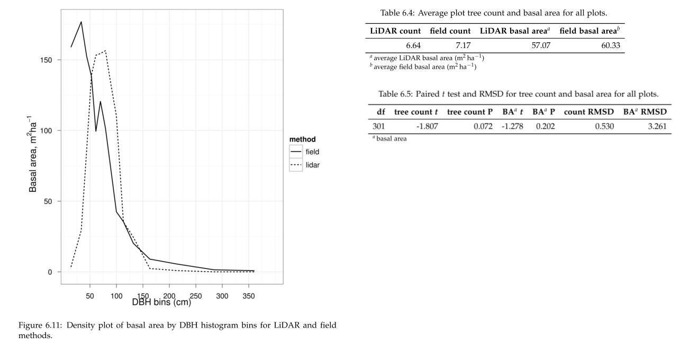
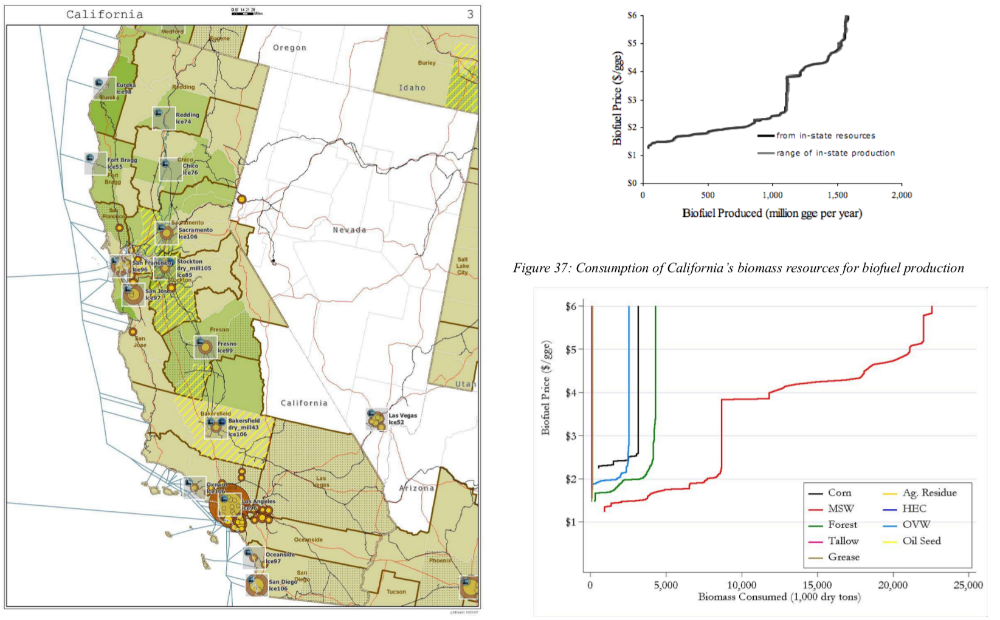
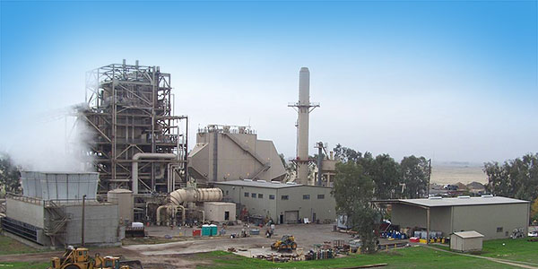
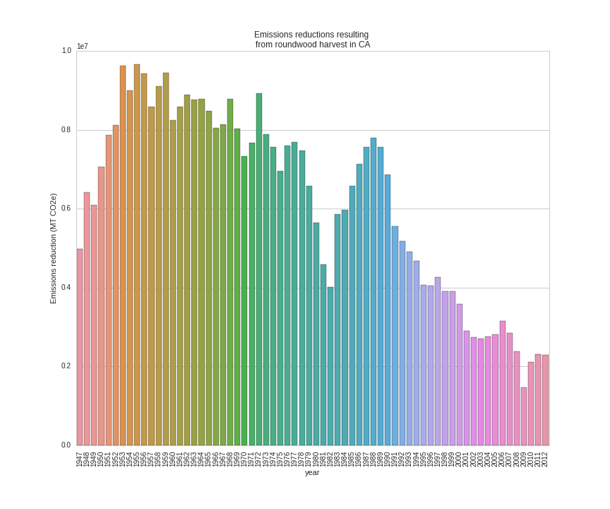

Forest products and bioenergy in California
The role for UC research and extension
Peter W. Tittmann, Ph.D.
A little about me

Senior Analyst @ New Forests (2015–present)
- Rapid assessments of carbon offset and timber value
- Due diligence on property acquisitions
- Growth and yield modeling
- Financial model development
Academic Coordinator @ UC Biomass Utilization Group (2013-present)
- Biomass infrastructure map/database
- Life-cycle analysis of roundwood harvest
- Community-based bioenergy workshop series
- Grants webinar series
- Policy issues
- Industry outreach
PostDoc @ UC Davis Energy Institute (2011-2013)
- Bioenergy systems modeling
- Hybrid poplar growth modeling
UC Davis Dissertation
- Individual tree detection and delineation
- Geometric shape-fitting
- RAndom Sample and Consensus (RANSAC)
1. Tittmann P, Shafii S, Hartsough B, Hamman B. Tree detection, delineation, and measurement from LiDAR point clouds using RANSAC. In: Hirata Y et al., editor. Proceedings of Eleventh International Conference on LiDAR Applications for Assessing Forest Ecosystems (SilviLaser 2011) [Internet]. Hobart; 2011.
RanSAC Model results

Forest Products in California: Key issues
- Efficiency and innovation
- Renewable energy
- Carbon cycle of wood products
- Public education
Efficiency and innovation
- Infrastructure
- Products
- Supply chains
- Livelihood
Utilization of biomass from tree mortality
Collaborators: Carmen Tubbesing (Ph.D. Candidate ESPM), Eng. Jose Lara (Ph.D. Student Energy and Resources)
Funded by: California Energy Commission
- Translate Aerial Detection Survey mortality to biomass volume @30m statewide
- Model harvest and transport costs
- Evaluate substation-level grid capacity for small scale (<3MW) biomass power.
Mapping Mortality

Spatial Clustering

Modeling harvest operations cost
Yarding distance

Slope
Cluster-level supply curve

Infrastrucutre and Ecological Processes
Biomass and forest products infrastructure database
Redwood Properties: NZ vs CA
Calculate Modulus of Elasticity (MOE) and modulus of Rupture (MOR) for redwood samples from New Zealand and California

Redwood Results
- No significant differences between NZ and CA
- Regional differences suggest local variables drive wood property differences
California forest products industry
| State | Rough lumber (%) | Surfaced lumber (%) | Total Output (MMBF) | Percent of Region |
|---|---|---|---|---|
| CA | 34 | 65 | 1937 | 0.15 |
| ID | 3 | 97 | 1647 | 0.12 |
| MT | 4 | 96 | 562 | 0.04 |
| OR | 5 | 95 | 5119 | 0.39 |
| WA | 4 | 96 | 3942 | 0.30 |
Source: 1. Western Wood Products Association. 2013 Statistical Yearbook of the Western Wood Products Association. Portland: Western Wood Products Association, 2013.
Product Opportunities
- Cross-laminated timber
- Oriented Strand Board
- Hardwoods – engineered flooring, construction mats, drayage
- Small-CHP + wood processing
pymiata: Forestry equipment cost calculator

pymiyata Example
| Manufacturer | Model | Initial investment ($) | Salvage Value($) | Economic Life (years) | Scheduled Operating Time (hrs/year) | Productive Time (hrs/year) | Utilization Rate | Use Cost ($/PMH) |
|---|---|---|---|---|---|---|---|---|
| Fecon | FTX128 | 200000 | 40000 | 5 | 1872 | 1215.36 | 0.649230769 | 74.318588 |
| Kaiser | S2-2 | 374000 | 74800 | 5 | 1872 | 1215.36 | 0.649230769 | 115.7630803 |
| FAE - Prime Tech | PT-175 | 255000 | 51000 | 7.5 | 1872 | 1215.36 | 0.649230769 | 76.47029789 |
| Takeuchi | TL12CRH | 118056 | 23611.2 | 8 | 1872 | 1248 | 0.666666667 | 44.96581 |
| Caterpillar | 299D XHP | 144200 | 30000 | 5 | 1872 | 1215.36 | 0.649230769 | 59.3833117 |
| Takeuchi | TB290CL | 137949 | 27589.8 | 8 | 1872 | 1215.36 | 0.649230769 | 44.51276035 |
| John Deere/Fecon | JD210 with BH80EXC | 270000 | 54000 | 20 | 1872 | 1560 | 0.833333333 | 60.50512261 |
| 2000 Timbco Feller Buncher | 425D | 505000 | 101000 | 10 | 1872 | 1755 | 0.9375 | 101.0949626 |
Renewable Energy
- Fuels
- Biomass power
- Heating and cooling
Decline in biomass power in CA Renewables Portfolio Standard

Mapping biomass supply
Jenkins, B. M., Williams, R., Parker, N., Tittmann, P., Hart, Q., Gildart, M., Dempster, P. (2009). Sustainable use of California biomass resources can help meet state and national bioenergy targets. California Agriculture, 63(4), 168–177.

Spatial/Technoeconomic Bioenergy Modeling
California

Biofuel vs. biopower in CA

Advanced Hardwood Biofuels Northwest
- Decision support for biorefinery siting
- Transportation routing
- Poplar growth model
- Soils
- Climate
- Biorefienery cost model (Jet Fuel, Ascetic Acid)
- Detailed farm budgets
- Crop switching
Project Technical Assistance
Camptonville Community Partnership
- 3 MW combined heat and power
- Assisted with successful grant proposal
- Assisted with technology due diligence
IHI Power: Rio Bravo Rocklin
- 25 MW Biomass Power plant
- Proposal to compare urban and forest feedstock impact on O&M costs

Carbon Cycle of Wood Products
- Integrated industrial/forest ecology
- Lack of data
Need for science based leadership
Climate impacts of roundwood harvesting
Research Goals
Analysis Framework

Key Findings
- Range of SLCP emissions estimates
- Roundwood harvest results in a net emissions reduction compared to no harvest assuming sustained yield forestry and no land conversion.
- Critical need for improved data and monitoring:
- Emissions
- Black and brown carbon emissions from pile, prescribed and wildfire
- Displacement
- Need better understanding of wood and energy use in residential/commercial construction specific to California.
Different estimates
Divergence between BOE and CARB based estimates
- Air Resources Board
- Criteria Pollutant Emissions Inventory
- 2.5 MMT CO2e
- Board of Equalization
- Historical harvest data from timber tax records
- 0.57 MMTCO2e
Emissions reduction
- Wood harvested in California in 2012 resulted in avoided emissions of 2.29 MMTCO2e
- Timber harvest producing roundwood including emissions from pile burning of logging residuals results in a net emissions reduction of 1.93 MMTCO2e
Historical emissions reductions from harvest

Public Education
Raising public awareness/interest in forests as places of
both
recreation/wilderness
and
livelihood, material production
Does it take Smurfs ?!
- Can we do better at communicating the role of forests in our lives?
- What resonates culturally?
- Reality TV (Axe Men)
- Aesthetics of wood?
Local/sustainable?

Research questions
- What forest product utilization strategies minimize climate pollution and public health impacts?
- What strategies align with the range of public values for forests?
- What innovations in the forest product sector improve our ability to efficiently and sustainably manage forests?
- What are effective strategies for public education around sustainable forest products?
Funding and collaboration
Build on strong existing ties with:
- UC Davis – Energy Institute
- Humboldt State University – Schatz Energy Research Center
Strengthen collaboration on campus with:
- LBNL
- Engineering
- Haas
Extension Priorities
- Robust applied research program
- Close collaboration with UCANR Specialist/Adviser network
- Engage actively in public discourse and policy development
- Technical assistance
- Diversity and inclusiveness